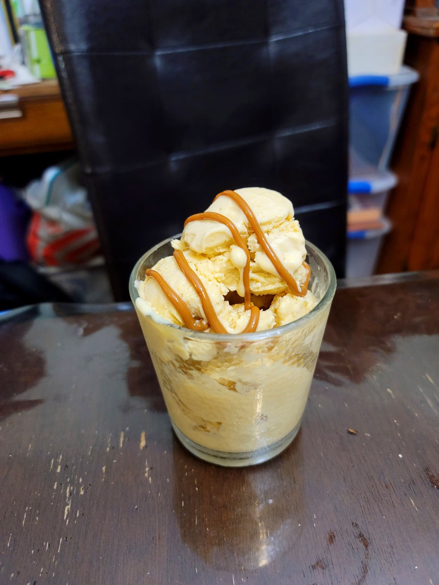

Lucuma Ice Cream

Ingredients:
- 14 oz Frozen lucuma pulp, thawed
- 2 cups Milk
- 1 cup Sugar
- 4 Egg yolks
- 1 3/4 cup Heavy cream
- Optional: Dulce de leche
Instructions:
- Place the milk into a pot over medium-low heat. Do not let the milk come to a boil. While the milk is heating up, place the egg yolks and sugar into a separate bowl and whisk together until homogenous.
- Then pour some milk from the pot into the egg mixture while whisking constantly to temper the eggs. Then pour the entire egg mixture back into the pot of milk while whisking constantly.
- Whisk the milk constantly while monitoring the temperature until the temperature of them milk reads 170 degrees Fahrenheit. Then immediately remove from the heat. Whisk in the lucuma pulp until homogenous and then transfer to a fridge to chill completely.
- Once the mixture is completely chilled, prepare the heavy cream. Transfer the heavy cream to a large bowl and whip with an electric mixer until stiff peaks are formed. Thoroughly mix in 1/3 of the whipped cream into the lucuma mixture. Then gently fold in the rest of the whipped cream into the lucuma mixture.
- Pour the ice cream mixture into an already churning ice cream maker (This may likely need to be done in two batches). Let churn for about 50 minutes or until soft serve consistency. Transfer to a sealable container and place into a freezer to firm up, at least 4 hours to overnight.